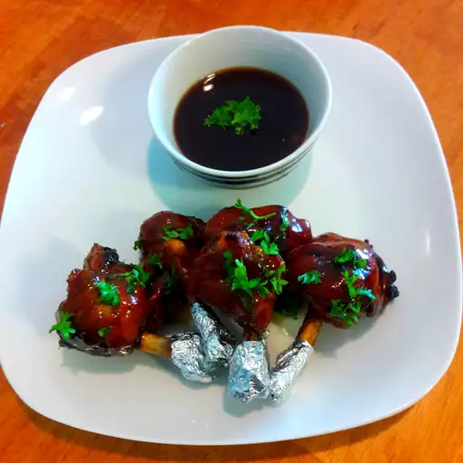

Description
Chicken lollipop is a popular appetizer in Indo-Chinese cuisine. It features marinated chicken wings or
drumettes shaped like a lollipop, coated with a flavorful spice mix, and deep-fried to perfection. The
crispy
exterior and juicy interior make it a favorite at parties and gatherings. Often served with a tangy dipping
sauce, it's a delightful treat for chicken lovers.
Ingredients
- Chicken drumettes or wings (8-10 pieces)
- Ginger-garlic paste (2 tablespoons)
- Soy sauce (1 tablespoon)
- Red chili powder (1 teaspoon)
- Corn flour (2 tablespoons)
- All-purpose flour (2 tablespoons)
- Egg (1, beaten)
- Salt to taste
- Oil for deep frying
- Spring onions and coriander leaves for garnish
Steps
- Clean the chicken and carefully shape the meat into a lollipop form by pushing the flesh to one end of
the
bone.
- Marinate the chicken with ginger-garlic paste, soy sauce, red chili powder, and salt. Let it rest for 30
minutes.
- Prepare a batter by mixing corn flour, all-purpose flour, egg, and a pinch of salt. Adjust consistency
with
water if needed.
- Heat oil in a deep pan over medium flame.
- Dip the marinated chicken in the batter, ensuring an even coating./li>
- Deep fry the chicken pieces in hot oil until golden brown and crispy.
- Drain excess oil on paper towels and garnish with spring onions and coriander leaves.
- Serve hot with a tangy dipping sauce of your choice.